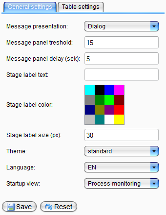
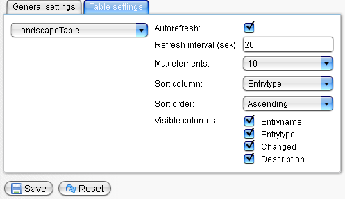

GUI Settings

Topic content
General Settings
Under the tab general settings , the basic configuration of the Orchestra monitor can be changed.
Message presentation |
Display mode of information (dialog or message panel) |
Message panel threshold |
Number of messages hold in message mode |
Message panel delay |
Duration of displaying the message panel |
Stage text |
Optional marking of the environment |
Stage color |
Optional color of the stage text |
Theme |
Selection of the monitor theme (the standard installation contains the themes standard and dark, more themes can be added easily) |
Language |
Language selection for the Orchestra monitor |
Start up view |
Start view that is displayed after successful log in |

Table Settings
Under the tab table settings the settings for each data table of the monitor can be configured:
Max elements |
Number of entries per page |
Auto refresh |
Automatic refresh on/off |
Refresh interval |
Refreshing interval |
Sort column |
Column which is used for sorting per default |
Sort order |
Default sorting type (descending or ascending) |
Visible columns |
Visible table columns |
